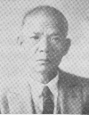
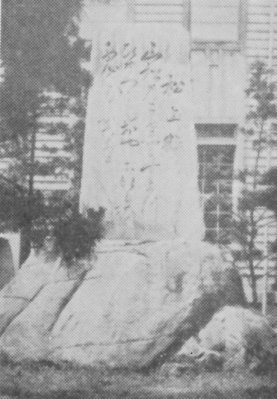

高松中学校 校歌制定時のエピソード

藤井静夫先生
高松中学の校歌は、作詞は国語科の藤井静夫先生ですが、曲は軍歌『橘中佐』を借用しています。
そのときの様子について、安永先生が『玉翠 創立70周年記念特集号』(昭和38年発行)で語られています。
また、校歌２番にある「朝夕仰ぐ碑は 日嗣の皇子の行啓の 千代に朽ちせぬ記念なる」とは、安永先生の話から、高松中学の玄関前にあった嘉仁親王(後の大正天皇）の行啓記念碑のことを歌っていることが分かります。
思い出すままに
安永邦弘先生
私が高中に着任したのは明治40年1月でした。
（中略）
一番印象に残るのは、玄関前に屹立して居た行啓記念碑のことです。その正面には、大正天皇当時皇太子であらせられた方の御歌
山松の梢にすたつ雛鶴も親にならいて千代よはふなり

行啓記念碑
校歌を制定することになり国語の先生方が各自命により力作を出しましたが、藤井静夫先生の作が選に入り、作曲は誰にも頼まず、美声の森邦三郎先生に数々の軍歌の曲で歌って貰い、結局軍神橘中佐の歌の曲が一番良いということになり、決まりました。
（引用者注:安永先生が述べられている礎石は、高松市空襲で高松中学が全焼した際にひび割れを起こし、移動されて土に埋もれていましたが、昭和32年5月、高松工芸横のグランド北東角に「高松中學校發祥地碑」の礎石として再建されたことが「玉翠」38号に書かれています。）